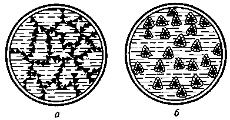
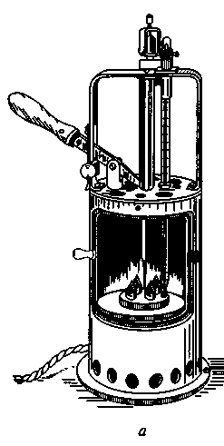
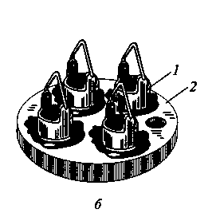
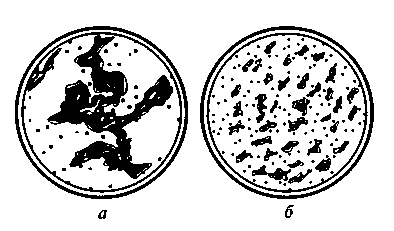
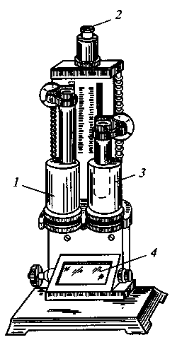

Тема 7
Качественные
показатели и марки масел
По назначению
смазочные материалы делятся на масла:
– моторные,
предназначенные для двигателей внутреннего сгорания (бензиновых, дизельных,
авиационных);
– трансмиссионные, применяемые в трансмиссиях
тракторов, автомобилей, комбайнов, самоходных и других машин;
Эти два типа масел иногда объединяют термином
«транспортные масла».
– индустриальные, предназначенные главным образом
для станков;
– гидравлические для гидравлических систем различных
машин;
Также выделяют
компрессорные, приборные, цилиндровые, электроизоляционные, вакуумные и др.
масла.
Физико-химические
свойства масел
Для каждого из
типов масел, в зависимости от назначения, важны отдельные характеристики. Здесь
мы представим основные.
Вязкость является
одной из важнейших характеристик смазочных масел, определяющих силу
сопротивления масляной пленки разрыву. Чем прочнее масляная пленка на
поверхности трения, тем лучше уплотнение колец в цилиндрах, в частности для
моторных масел, меньше расход масла на угар. В соответствии с
нормативнотехнической документацией вязкостно-температурные свойства моторных
масел оцениваются индексом вязкости.
Вязкость
динамическая – это сила сопротивления двух слоев смазочного материала площадью
1 см2, отстоящих друг от друга на расстоянии 1 см и перемещающихся
один относительно другого со скоростью 1 см/с. Вязкость кинематическая
определяется как отношение динамической вязкости к плотности жидкости.
Индекс вязкости – относительная величина,
показывающая степень изменения вязкости в зависимости от температуры. Индекс
вязкости рассчитывают по значениям кинематической вязкости при 40 и 100 °С или
находят по таблицам. Вязкостно-температурные свойства масел оценивают также по
кинематической вязкости при низкой температуре (0 и –18 °С).
Кинематическая
вязкость моторных масел, используемых в смазочных системах автомобильных
двигателей, равна 4-14 мм2/с при 100 °С. С понижением температуры
она быстро увеличивается, достигая при –18 °С значения 10000 мм2/с и
более. Масла с кинематической вязкостью 4-8 мм2/с используют в
зимнее время, с вязкостью 10-14 мм2/с – летом.
Температура
застывания – это предельная температура, при которой масло теряет подвижность.
Масла, имеющие температуру застывания –15 °С и выше, относятся к летним. Если же
температура застывания –20 °С и ниже, то масла относятся к зимним. Температура
застывания в какой-то мере характеризует предельную температуру, при которой
возможен запуск охлажденного двигателя. Однако, температура запуска двигателя
на холоде зависят не столько от температуры застывания масла, сколько от
величины его вязкости при данной температуре.
Противоизносные
свойства характеризуют способность масла уменьшать интенсивность изнашивания
трущихся деталей, снижать затраты энергии на преодоление трения. Эти свойства
зависят от вязкости и вязкостно-температурной характеристики, смазывающей
способности и чистоты масла. Моюще-диспергирующие свойства подразделяются на
моющие и диспергирующие свойства. Моющие свойства характеризуют способность
масла обеспечивать необходимую чистоту деталей двигателя и противостоять
лакообразованию на горячих поверхностях, а также препятствовать прилипанию
углеродистых соединений. Диспергирующие свойства характеризуют способность
масла препятствовать слипанию углеродистых частиц, удерживать их в состоянии
устойчивой суспензии и разрушать крупные частицы продуктов окисления при их
появлении.
Противоокислительные
свойства определяют стабильность масла, от которой зависит срок работы масел в
двигателях, характеризуют их способность сохранять первоначальные свойства и
противостоять внешнему воздействию при нормальных температурах. Стойкость
моторных масел к окислению повышается при введении антиокислительных присадок.
Коррозионная
активность всех масел зависит, прежде всего, от содержания в них сернистых
соединений, органических и неорганических кислот и других продуктов окисления.
В лабораторных условиях антикоррозионные свойства моторных масел оценивают по
потере массы свинцовых пластин (в расчете на 1 м2 их поверхности) за
время испытания при температуре 140 °С.
Коррозионный
износ деталей определяется также исходным значением щелочности и скоростью ее
изменения. Чем больше проработало масло, тем ниже становится показатель
щелочности. Поэтому показатель щелочности вводится в число показателей качества
масла. Зольность масла позволяет судить о количестве несгораемых примесей в
маслах без присадки, а в маслах с присадками – о количестве введенных зольных
присадок. Зольность определяют в лабораторных условиях и выражают процентным
отношением образовавшейся золы к массе пробы масла, взятой для анализа.
Зольность масел, не содержащих присадок, не превышает 0,02-0,025 % по массе. У
масел с присадками зольность не должна быть менее 0,4%, а у высококачественных
марок масел не менее 1,15-1,65 % по массе.
Содержание
механических примесей и воды. Механических примесей в маслах без присадок не
должно быть, а в маслах с присадками их значение не должно превышать 0,015% по
массе, причем механические примеси не должны оказывать абразивного действия на
трущиеся поверхности. Вода в моторных маслах должна отсутствовать. Даже
небольшое количество воды вызывает деструкцию присадок, происходит процесс
шламообразования.
Присадки
применяются для придания маслам новых свойств или изменения существующих.
Присадки подразделяют: на антиокислительные – повышают антиокислительную
устойчивость масел; противокоррозионные – защищают металлические поверхности от
коррозионного воздействия кислото- и серосодержащих продуктов;
моюще-диспергирующие – способствуют снижению отложений продуктов окисления на
металлических поверхностях; противоизносные, противозадирные и антифрикционные
– улучшают смазочные свойства масел; депрессорные – понижают температуру
застывания масел; антипенные – предотвращают вспенивание масел.
Температура застывания
масел
При определенных значениях температуры
при охлаждении масла становятся нетекучими. Переход в нетекучее состояние вызывается
либо выпадением в процессе понижения температуры масла кристаллов высокоплавких
углеводородов и образованием из них кристаллического каркаса (рис. 1, а), либо
сильным увеличением его вязкости.
Применение масла, потерявшего
подвижность, недопустимо, поэтому стандарты ограничивают их максимальные
температуры застывания.
В процессе производства принимаются меры
по снижению температуры застывания масел. К таким мерам относятся удаление
наиболее высокоплавких углеводородов из масел при помощи депарафинизации.

Рис. 1. Схемы выпадения кристаллов твердых углеводородов при охлаждении масла:
а
— образование кристаллического каркаса в масле без присадки; 6 — масло
с введенным депрессатором депарафинизации и введение в очищенные масла
депрессорных присадок (рис.1, б). Например, введение
депрессатора АзНИИ в количестве 0,5 % снижает температуру застывания масла на
15... 20°С.
Иногда снижение температуры застывания
обеспечивается с помощью многофункциональных присадок АзНИИ-ЦИАТИМ-1 и ПМА-Д.
Вязкость масел
Вязкость
— одно из важнейших свойств масла, имеющее многостороннее эксплуатационное
значение.
От
вязкости масла зависят режим смазывания пар трения, отвод тепла от рабочих
поверхностей, уплотнение зазоров, энергетические потери в двигателе, его
эксплуатационные качества, а также запуск двигателя, прокачивание масла по
системе смазки, охлаждение трущихся деталей и их очистка от загрязнения.
Масло
с чрезмерно низкой вязкостью легко выдавливается из зазоров между деталями, что
ведет к повышенному износу механизмов и увеличению расхода смазочного
материала. При слишком высокой вязкости, с одной стороны, затрудняется подача
масла в зазоры, следствием чего также является интенсивный износ механизмов, а
с другой стороны, возрастает расход энергии на относительное перемещение
смазанных или погруженных в масляную ванну деталей. Поэтому вязкостные свойства
моторных масел определяются в стандартах значениями вязкости при 100 и 0 °С (а
для некоторых масел при —18°С) и индексом вязкости (ИВ), т.е. интенсивностью
изменения вязкости с повышением или понижением температуры.
Увеличение
вязкости масла с понижением температуры обусловливает значительные трудности
при эксплуатации автомобилей, особенно в зимнее время, усложняя пуск
двигателей.
Надежный
пуск карбюраторных двигателей осуществляется при частоте вращения коленчатого
вала 35...50 об/мин (при температуре окружающего воздуха —10... +20 °С), а
дизельных двигателей с различным способом смесеобразования — при средней
частоте вращения 100...200 об/мин (при температуре до 0°С).
Индекс
вязкости автомобильных масел должен быть не менее 90.
Для
получения масел с хорошими вязкостно-температурными свойствами в базовые
маловязкие масла (с вязкостью при 100°С менее 5 мм2/с) добавляют
3...4 % вязкостных присадок, например полиизобутилена. Полученные таким образом
масла, называемые загущенными, обладают высоким ИВ (115... 140).
Загущенные
масла имеют значительно лучшие низкотемпературные свойства, что особенно важно
при пуске двигателей в холодное время и для снижения пусковых износов.
Использование для автомобильных двигателей загущенных внесезонных масел,
обеспечивающих надежную их работу, дает существенный технико-экономический
эффект: на 3... 7 % повышается мощность двигателя, а также снижаются
механические потери на трение.
Специфические
свойства моторных масел, зависящие от условий их работы
Масла
в двигателях внутреннего сгорания выполняют ряд важных функций, причем
работают они в очень тяжелых условиях: при воздействии изменяющихся во времени
давлений (достигающих в некоторых узлах 100 МПа) и высоких температур (температура
продуктов сгорания топлива превышает 2000 °С).
В
зависимости от условий работы масла в двигателе различают три зоны:
высокотемпературную —
камера сгорания, обращенная к ней поверхность днища поршня и верхняя часть
цилиндра. Некоторые детали в этой зоне нагреваются до 400 (например, днище поршня)
и даже до 800 °С (например, выпускной клапан), а температура горящих газов
может достигать 2500 °С;
среднетемпературную
— поршень с поршневыми кольцами и пальцем, верхняя
часть шатуна и стенки цилиндра. Максимальная температура в этой зоне
развивается в области поршневых колец (до 300 и даже 350 °С);
низкотемпературную —
коленчатый вал, картер (температура в области коренных и шатунных подшипников
достигает 180 °С).
Физическая стабильность
масел при повышенных температурах
В средне- и низкотемпературной зонах
прогретого двигателя масло способно интенсивно испаряться, т.е. оно
недостаточно физически стабильно при повышенных температурах. В результате
испарения количество масла в системе смазки уменьшается, а его качество ухудшается.
Этот процесс характеризуется температурой вспышки масла —
минимальной температурой нефтепродукта, при которой его пары от нагревания в
стандартном приборе образуют с окружающим воздухом смесь, вспыхивающую от
пламени определенного размера. Чем выше температура вспышки, тем меньше
испаряемость масла и, следовательно, лучше его физическая стабильность.
Нагарообразование
в высокотемпературной зоне двигателя
При работе двигателя масло частично
попадает в камеру сгорания и там в основном сгорает. Несгоревшее масло в
результате глубоких химических превращений преобразуется в нагар, который
плохо влияет на работу двигателя. Образующийся слой нагара ухудшает теплоотвод
от деталей, облегчает возникновение детонации и калильного зажигания, а
оторвавшиеся от стенок камеры твердые частички загрязняют работающее масло.
Количество образующегося нагара зависит
от качества масла и его расхода, а также от качества топлива. Предельная
толщина слоя нагара определяется тепловым режимом работы двигателя: чем холоднее
стенки камеры сгорания, тем толще образуется слой нагара. Летом нагара
образуется меньше, чем зимой.
Лакообразование
в среднетемпературной зоне двигателя
В среднетемпературной зоне двигателя
углеводороды и другие компоненты масел становятся недостаточно химически
стабильными. Они окисляются и образуют плохо испаряющиеся, высоковязкие,
практически не растворимые в масле асфальтены и кислые смолы, осаждающиеся на
деталях в виде тонкого блестящего слоя, называемого лаковым отложением.
Наибольшую опасность лаковые отложения
представляют для поршневых колец, так как вместе с внедрившимися в них твердыми
частичками нагара вызывают пригорание поршневых колец, т. е. полную потерю ими
подвижности.
На рис. 2 показан прибор для определения
термоокислительной стабильности масла.


Рис. 2. Прибор для определения термоокислительной стабильности масла (а) и
его диск (б):

1 — кольцо; 2 — диск
Рис. 3. Схема углеродистой дисперсии в масле, наблюдаемая с помощью электронного
микроскопа:
а — без моющей присадки; б — с моющей присадкой
Одной из мер борьбы с лакообразованием является введение в масла
антиокислительных (ДФ-11, МНИ, ИП-22к, ВНИИ НП-354, ИХП-21 и др.) и моющих
(обычно в составе композитных) присадок, которые тормозят отложение
образующихся смолисто-асфальтовых веществ.
При использовании масла с хорошими
моющими свойствами детали двигателя выглядят как бы вымытыми. Кроме того,
моющие присадки удерживают продукты окисления масла во взвешенном состоянии, препятствуя
прилипанию их к поверхностям нагретых деталей и сращиванию частичек между
собой, что нарушило бы поступление масла к трущимся деталям(рис.3).

Рис. 4. Колориметр для определения цвета масла:
1 — цилиндр с эталонной жидкостью; 2 — окуляр оптической
системы; 3 — цилиндр с испытуемым маслом; 4 — экран
Моющие свойства масел оценивают по
цветной эталонной шкале в баллах от 0 до 6 с помощью прибора ПЗВ, работающего
на принципе создания в небольшом одноцилиндровом двигателе условий
интенсивного лакообразования.
Работающее масло со временем изменяет
цвет от светлого до темно-коричневого. Колориметр для определения цвета масла
показан на рис. 4.
Образование
лаковых отложений на поршне двигателя, работающего на масле с моющими
присадками, уменьшается в 3...6 раз (с 3,0...4,5 до 0,5... 1,5 баллов). Применяют
моющие присадки двух типов — зольные и беззольные, которые вводят в базовые
масла в количестве 2... 10%.
Изменение масла в
низкотемпературной зоне двигателя
Несмотря на довольно мягкий тепловой
режим в низкотемпературной зоне двигателя в ней также происходит окисление
масла. Типичными продуктами окисления масла в этой зоне являются органические
кислоты, преобразующиеся частично в кислые смолы, которые в виде осадков
(мазеобразных сгустков) откладываются на стенках поддона картера, крышке клапанной
коробки, фильтрах и т.д. Отложение осадков в маслопроводах может привести к
прекращению подачи масла к трущимся поверхностям.
Рис. 5. Вкладыш подшипника из свинцовистой бронзы, разрушенный коррозией
Для предотвращения образования осадков
необходимо поддерживать оптимальный тепловой режим работы двигателя, применять
масла с хорошей химической стабильностью.
Образовавшиеся в масле и растворившиеся
в нем кислоты очень агрессивны, в первую очередь, по отношению к свинцу (рис.
5). Для защиты деталей от коррозии в масла вводят антикоррозионные присадки,
содержащие серу и фосфор, т. е. для нейтрализации кислых продуктов маслам с
помощью присадок придаются щелочные свойства.
В процессе работы моторные масла
способны сильно вспениваться. Торможение пенообразования достигается введением
в масла противопенных присадок, например ПМС-200А.